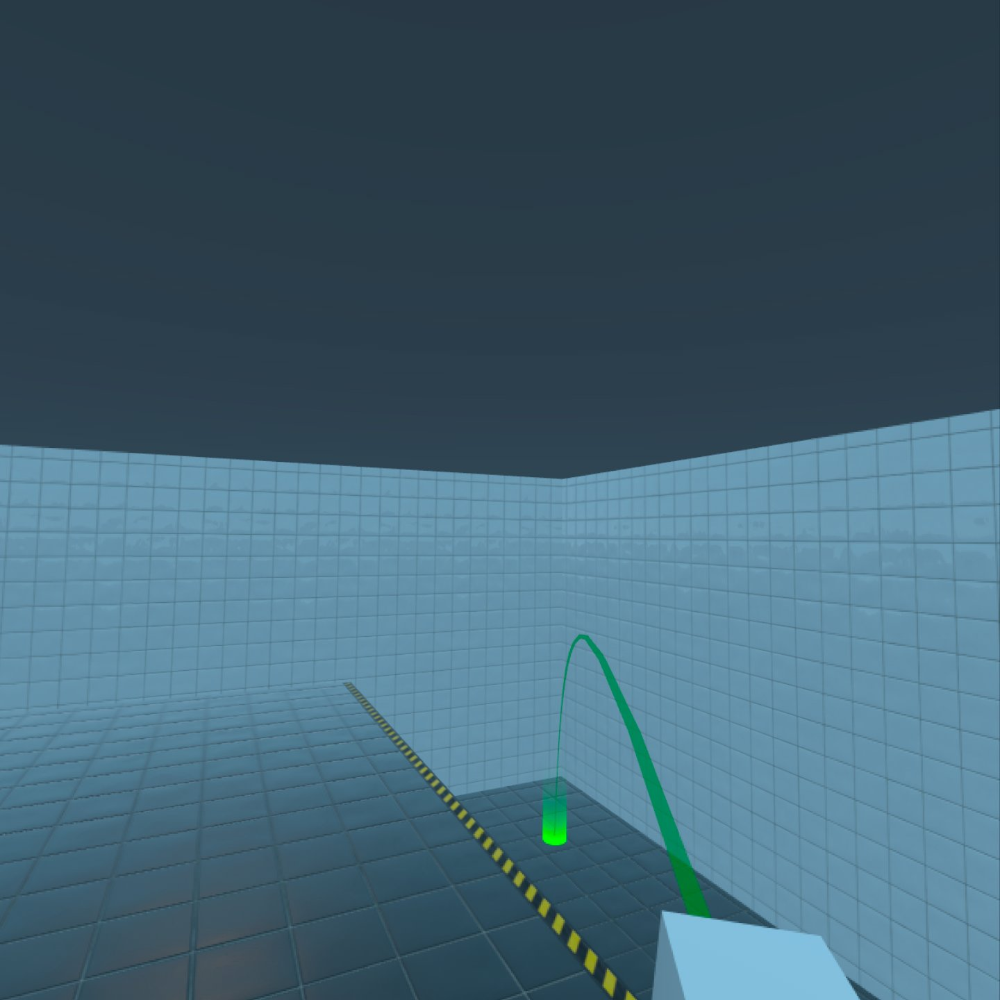

Qt Quick 3D - XR Freeform Teleportation Example
Demonstrates how to implement simple locomotion in Qt Quick 3D XR.

Overview
This example shows how to move to places in the virtual environment using a simple freeform teleportation system, a non-continuous form of movement.
Controls
For navigation, use the thumbstick on the right controller:
- Push the stick forwards to aim, and release it to teleport.
- Move the stick sideways to rotate.
Implementation
The teleportation logic is implemented in the FreeformTeleporter component. This is located in the separate sub-project xr_shared, so you can easily re-use it in other projects.
FreeformTeleporter { id: teleporter view: xrView originNode: xrOrigin cameraNode: xrOrigin.camera beamHandle: xrRightController xStickValue: xrRightController.xValue yStickValue: xrRightController.yValue onDoTeleportation: (cameraOriginPosition)=> { xrOrigin.position = cameraOriginPosition } onDoRotation: (cameraOriginRotation, cameraOriginPosition)=> { xrOrigin.rotation = cameraOriginRotation xrOrigin.position = cameraOriginPosition } }
The FreeformTeleporter component has the following properties that need to be set:
QtObject xrView
The xrView property gives access to XrView's built-in ray-picking. You can use any object that implements a rayPick method. For example, a View3D may be useful for prototyping.
Node originNode
The originNode property specifies the node that the freeform teleporter will manipulate. In XR, artificial locomotion is performed by moving the XrOrigin. We will therefore use the xrOrigin of our XrView as the originNode.
Node cameraNode
The cameraNode property provides the position of the camera. When rotating, it defines the center of rotation. When teleporting, it defines the position that will be placed over the selected location. In this example, we use the tracked XrCamera we created earlier.
Note: In XR, the XrOrigin defines the relationship between the scene and the user's reference space. This reference space is typically anchored to the physical space around the user. Changing the position of the XrOrigin will change how physical locations are mapped to scene coordinates. The XrCamera tracks the position of the user's head. When the user moves physically, the XrCamera's position and orientation will change relative to the XrOrigin.
Node beamHandle
The beamHandle property is the Node used as the teleportation beam's start point. In this example, we use the right controller as the beamHandle.
See also Locomotion in Qt Quick 3D Xr.